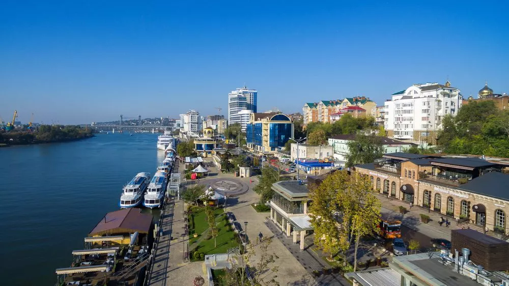
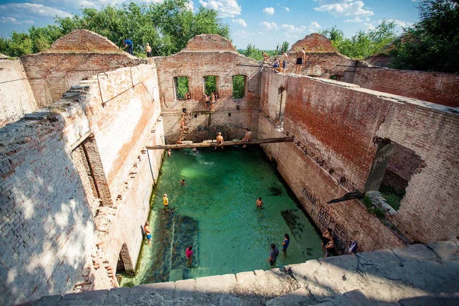
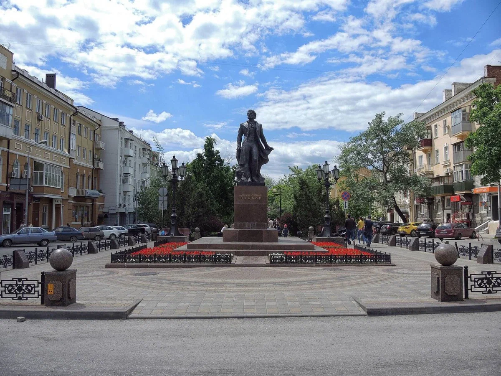
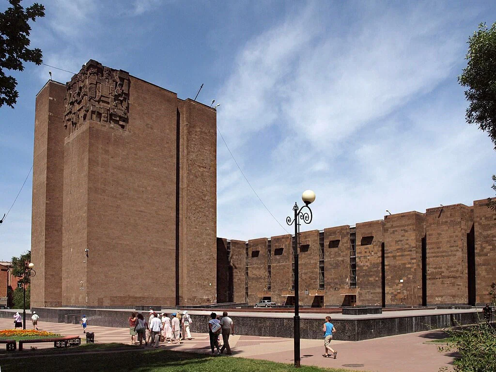
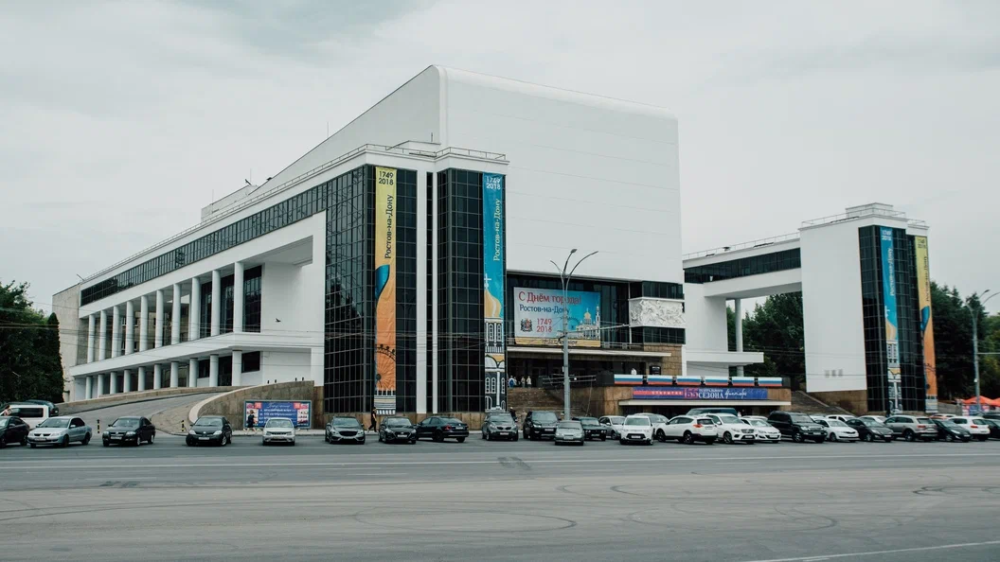

Attractions of Rostov-on-Don
❮

❯
Набережная Дона
Правый берег Дона — любимое место прогулок у ростовчан. Набережная названа в честь адмирала российского флота Фёдора Ушакова. Вдоль берега проложены пешеходные дорожки, по которым приятно ходить и любоваться гладью Дона. По пути встречаются контактные скульптуры, герои произведений Шолохова: Григорий и Аксинья в лодке, Дед Щукарь и Нахалёнок, а также местные персонажи — «Ростовчанка», «Дон-батюшка», «Рыбак». На набережной проводятся разные праздники, в том числе ежегодный фестиваль реки Дон. С причалов регулярно отправляются прогулочные катера.
Адрес: г. Ростов-на-Дону, ул. Береговая, 49а.
❮

❯
Парамоновские склады
Елпидифор Парамонов был известным ростовским купцом. В городе ему принадлежали несколько зданий, включая склады на берегу Дона. Красные кирпичные строения возвели в 19 веке и хранили в них зерно. Чтобы поддерживать оптимальную температуру хранения, в здание провели трубы, по которым текла прохладная родниковая вода. В советское время в заброшенных складах, затопленных водой, купалась детвора. Сегодня разрушенные от времени и войны складские здания находятся в запустении, хотя и признаны памятником архитектуры. Местные власти никак не могут определиться, что с ними делать. Идти смотреть парамоновские склады нужно, если вам нравятся заброшенные места или нужен необычный антураж для фотосессии.
Адрес: г. Ростов-на-Дону, ул. Нижнебульварная, 27.
❮

❯
Улица Пушкинская
Пушкинская — это ещё одна туристическая артерия Ростова-на-Дону, впервые появившаяся на городских плана в 1870 году. Тогда вместо мощеных тротуаров здесь были рвы от уничтоженной крепости, превращавшиеся во время дождей в болото. Однако город рос и цивилизация пришла и на эту улицу. Вместе с изменением её облика, изменилось и название: улицу нарекли в честь А. С. Пушкина, который не раз посещал донскую столицу. К началу XX столетия Пушкинская считалась второй главной улицей после Большой Садовой, а многие дворяне, купцы и промышленники построили здесь свои особняки. В числе них на Пушкинской находится и дом издателя и мецената Николая Парамонова — сына купца Е. Парамонова.
❮

❯
Донская государственная публичная библиотека
Следующий памятник архитектуры Пушкинской улицы появился здесь относительно недавно — в 1994 году, но этому предшествовали долгие двадцать лет строительства и примерно десять лет подготовки. Существующий облик здания является трудом совместных усилий нескольких архитекторов, а старт разработки проекта была дан ещё в шестидесятые. Учитывая сложившиеся в девяностые архитектурные тенденции, появление такого здания тогда воспринималось как нечто из прошлого. Тем не менее это не помешало библиотеке стать одним из самых узнаваемых зданий советской эпохи в Ростове-на-Дону. Интерьер, как и фасад, полон ровных и строгих линий, но благодаря наличию растительности и более мягким цветам выглядит куда менее брутально. Ежегодно в библиотеке проводятся образовательные мероприятия, научные конференции и даже кинофестивали.
Адрес: г. Ростов-на-Дону, ул. Пушкинская, 175а.
❮

❯